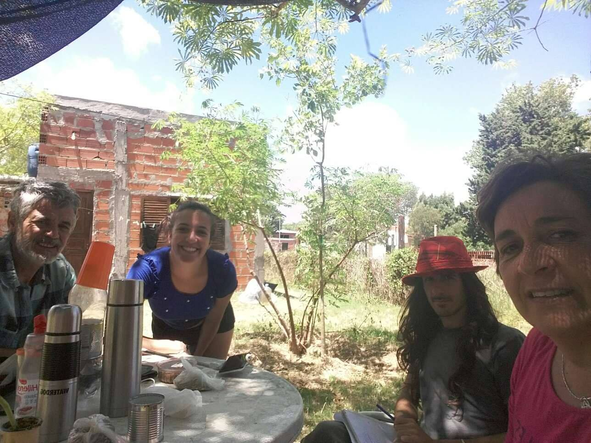

The Letter
A forgotten love letter. A letter that turns yellow as the writer waits. This experience became the foundation for the first track of Ssendas' second album.
Do you remember "The Correct Man" from the first track of the previous work? Unfortunately, no good news ever reached our protagonist.
The guitarist and I began production on the second album by ourselves. Since he lacked the fortitude for composition, directorial ability, and software knowledge, I took on those roles as well. I allowed him to focus exclusively on showcasing his magic: the guitar solos.
Now, back to the main topic. These lyrics were born from an attempt to place the protagonist of that old song into a more modern context. More years have passed since the previous story, and the hero is still trapped in "Nowhere" (En Ningún Lugar). It is like a land of void, or nothingness itself.
This was because I felt that way myself. Time passed, and though my letters and my pain were surely recognized, they were simply tucked away in memory. I felt as though I had been archived in a "forgotten drawer".
This is how I began writing the lyrics. I felt the need to dig deeper into this character, a reflection of myself, living as if left behind by the passage of time. Now, let's proceed with an analysis of the lyrics to understand each part.
A letter in the bread basket
Ink stains blurred by tears...
A letter about your gaze
Ink stains blurred by tears...
In nowhere.
This "letter" refers to that "message" sent by "The Correct Man" in the first work. It chronicled how the two of them exchanged love through their gazes (embracing with their eyes). That message arrived and was read by the person he longed for. That person shed tears over the letter and felt it in the depths of their heart. However, having to continue with their own life, that person left the letter in the bread basket and never touched it again.
A bread basket is an object so mundane and everyday. The protagonist is discarded as if someone had tossed their keys into a dust-covered bread basket somewhere in the house. I felt a strong interest in that contrast.
What happened to us? What on earth occurred?
I was supposed to be a "sincere man."
The protagonist seeks an explanation to justify his own pain and continues to try to understand even now. He is searching for "something" even deeper than the facts that were presented and made clear long ago.
In my thoughts, I can almost see you.
You are waiting for me to rescue you.
All those memories you cast aside
Are wandering with me now, in "Nowhere."
This part is like another flashback. In a way, it invites the listener into the scenes that the "sincere man" witnesses every day. He lives there, solely within his memories. Those memories have now become abstract, existing eternally within that "Nowhere."
The days when we once loved each other,
The kisses and caresses,
Do you still remember them?
Where has it all vanished to?
The protagonist continues his reminiscence, but at the same time, he struggles to understand why the other person has forgotten him, or why they haven't been affected by the same impact he felt. It is as if he is questioning himself: why can others move on with their lives so calmly while he alone remains at a standstill?
You left,
And I cannot shake this feeling
Of being in "Nowhere"...
Yes, in Nowhere.
Trapped here, unable to escape,
Not a single day goes by that I don't think of you.
I dream of you arriving,
So that with you,
I can go "Somewhere."
Even after several years have passed, the hero remains trapped in that place. He continues to wait for "something" that will likely never come, and he understands this fact all too painfully. His earnest wish is for his feelings to reach the person he loves, believing that this simple fact would grant meaning to his existence.
"Nowhere" (En ningún lugar) refers to a realm of void where there is no meaning or motive, only pain. In contrast, the "Somewhere" (Algún lugar) the protagonist speaks of is a place where "something" exists, and therefore, everything holds meaning. This wordplay was written with very clear intent.

February 2019 (one month before writing the lyrics). On vacation with family in Las Toninas, Argentina. The object in my hand is a notebook; I am likely in the middle of writing the lyrics for this song.
Looking back, it was precisely because I was trapped in that situation, drowning in my own loneliness and uncertainty, that I was able to create such a reflective work and breathe life into a world and characters that I personally find fascinating.